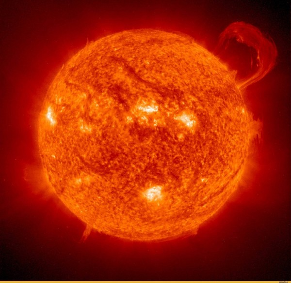

The Sun is the star at the center of the Solar System. It is a nearly perfect sphere of hot plasma,[18][19] with internal convective motion that generates a magnetic field via a dynamo process.[20] It is by far the most important source of energy for life on Earth. Its diameter is about 1.39 million kilometers (864,000 miles), or 109 times that of Earth, and its mass is about 330,000 times that of Earth. It accounts for about 99.86% of the total mass of the Solar System.[21] Roughly three quarters of the Sun's mass consists of hydrogen (~73%); the rest is mostly helium (~25%), with much smaller quantities of heavier elements, including oxygen, carbon, neon, and iron.[22]

Sun Image
The Sun is composed primarily of the chemical elements hydrogen and helium.
At this time in the Sun's life, they account for 74.9% and 23.8% of the mass of the Sun in the photosphere, respectively.
All heavier elements, called metals in astronomy, account for less than 2% of the mass, with oxygen (roughly 1% of the Sun's mass), carbon (0.3%), neon (0.2%), and iron (0.2%) being the most abundant.
The Sun has a magnetic field that varies across the surface of the Sun. Its polar field is 1–2 gauss (0.0001–0.0002 T), whereas the field is typically 3,000 gauss (0.3 T) in features on the Sun called sunspots and 10–100 gauss (0.001–0.01 T) in solar prominences.
The Sun's magnetic field leads to many effects that are collectively called solar activity. Solar flares and coronal-mass ejections tend to occur at sunspot groups. Slowly changing high-speed streams of solar wind are emitted from coronal holes at the photospheric surface.